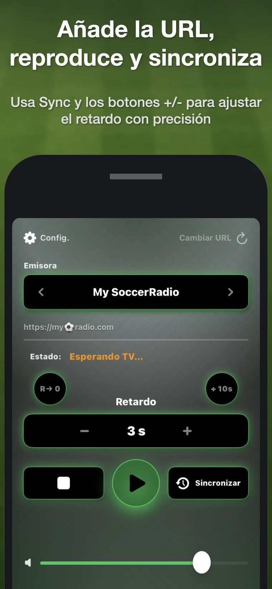
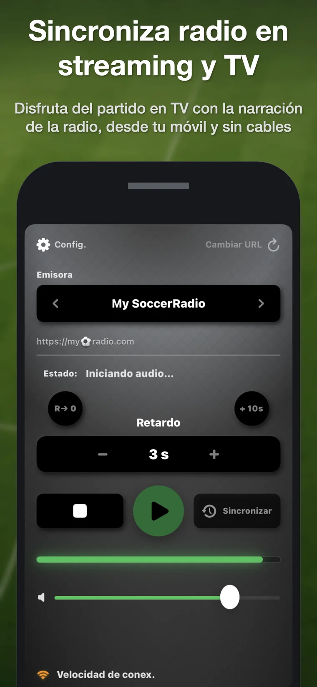
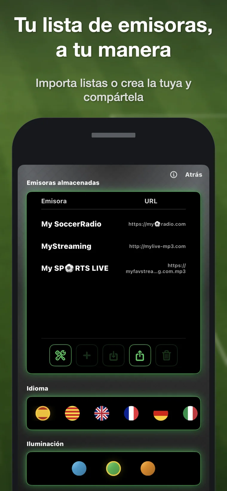

1. Añade una emisora
Añade una URL directa compatible o importa una lista de emisoras TXT, M3U o JSON.
Soccer RadioTv Sync retrasa una emisión de radio online compatible directamente en el iPhone para que la narración coincida con la imagen de televisión cuando la radio va adelantada.

Cuando una retransmisión deportiva llega a la televisión mediante streaming, la imagen puede aparecer varios segundos después que la narración de radio. Escuchas el gol antes de verlo. Soccer RadioTv Sync recupera la experiencia clásica de ver el partido en TV mientras escuchas a tu comentarista de radio preferido.
Lee la guía práctica con los métodos para sincronizar radio y TV: app de iPhone, receptores con retardo, pausa de la TV y soluciones caseras con ordenador.
Cómo sincronizar la radio con la TV →Añade una URL directa compatible o importa una lista de emisoras TXT, M3U o JSON.
Pulsa Sincronizar al escuchar una jugada reconocible en la radio y vuelve a pulsar cuando aparezca en la TV.
La app calcula automáticamente el retardo. Utiliza + y – para afinarlo manualmente.
Normalmente solo es necesario entre 10 y 40 segundos, pero la aplicación soporta hasta 300.
Sigue escuchando con el iPhone bloqueado o mientras utilizas otras aplicaciones.
Cambia de servidor de la misma emisora si la radio va retrasada respecto a la TV.
Pensada para una reproducción estable, con bajo consumo de recursos y sin complicaciones.
Crea, importa, exporta y comparte listas TXT, M3U y JSON.
Localizada para una audiencia internacional, incluyendo español, inglés, alemán e italiano.
Existen receptores de radio con retardo, pero requieren hardware adicional y suelen ser mucho más caros. Las soluciones caseras con ordenador, cables o VLC pueden funcionar, pero resultan incómodas durante un partido. Soccer RadioTv Sync funciona en el iPhone que ya llevas contigo y utiliza emisiones por internet: tanto emisoras tradicionales que también emiten online como radios exclusivamente digitales sin frecuencia AM o FM.
La versión actual no incluye emisoras preinstaladas. Debes añadir una URL directa compatible o importar una lista. Esto permite que la aplicación sea internacional e independiente de una emisora concreta. Se está desarrollando un sistema más sencillo para descubrir emisoras.


Sí. Soccer RadioTv Sync reproduce una emisión de radio online compatible y aplica un retardo ajustable directamente desde el iPhone.
Pulsa Sincronizar al escuchar una jugada reconocible en la radio y vuelve a pulsar cuando aparezca en la TV. La app calcula el retardo y permite afinarlo con + y –.
Funciona con URLs directas de streaming compatibles. La versión actual no incluye emisoras, por lo que debes añadir una URL o importar una lista.
Funciona con emisiones por internet. Esto incluye emisoras tradicionales que publican un stream y radios online sin frecuencia AM o FM.
Está diseñada para situaciones en las que la narración de radio llega antes que la imagen de TV, algo habitual cuando la televisión tiene latencia de streaming.
No. La versión actual es una compra única, sin publicidad y sin necesidad de crear una cuenta.
Soccer RadioTv Sync nació de una situación muy concreta: su creador, aficionado al fútbol desde siempre, quería seguir viendo los partidos en televisión mientras escuchaba al comentarista de radio que llevaba más de 30 años acompañándole. Con la llegada de la televisión por streaming, la imagen empezó a llegar con retraso respecto a la radio. El resultado era frustrante: la narración se adelantaba a la jugada y los goles se escuchaban antes de verse. Al no encontrar una forma sencilla de resolverlo desde el iPhone, desarrolló una primera versión privada en un MacBook de 2013. Al comentarlo con amigos, les pareció una idea friki, pero también algo que sería genial poder llevar en el iPhone. Y al buscar en foros y redes descubrió que no era una rareza personal: el problema se repetía en muchos países y deportes distintos. Solo cambiaban la emisora, el equipo y el idioma. A partir de aquel primer núcleo de sincronización nació la versión para iPhone de Soccer RadioTv Sync: una aplicación indie creada para recuperar una forma clásica de vivir el deporte, adaptada a la era del streaming.